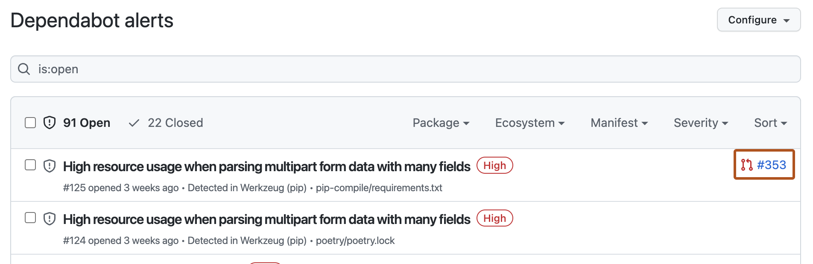
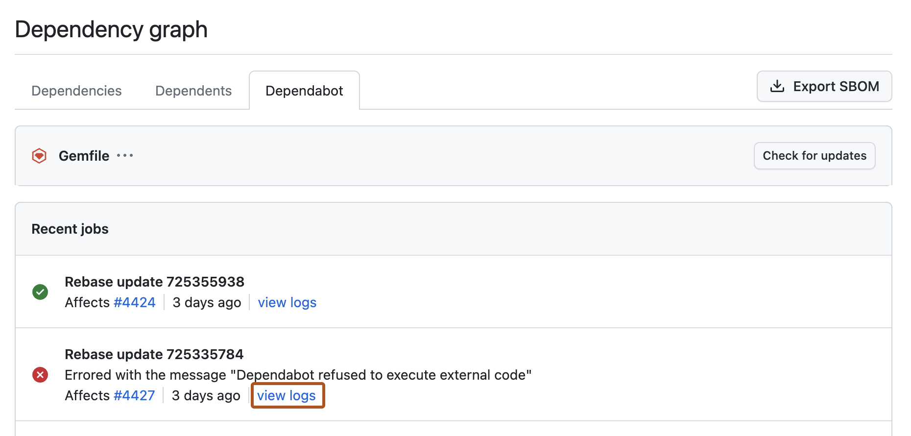

Dependabot automatically maintains your dependencies, keeping your code secure and current. This reference helps you diagnose and resolve issues so automated updates can continue.
When Dependabot encounters errors while updating your dependencies, you can use this reference to diagnose and fix common problems.
When Dependabot is blocked from creating a pull request to fix a Dependabot alert, it posts the error message on the alert. The Dependabot alerts view shows a list of any alerts that have not been resolved yet. To access the alerts view, click Dependabot alerts on the Security and quality tab for the repository. Where a pull request that will fix the vulnerable dependency has been generated, the alert includes a link to that pull request.

An alert may have no pull request link for several reasons:
To view error details, click the alert.
When Dependabot is blocked from creating a pull request to update a dependency in an ecosystem, you can view the job logs list to find out more about the error.
The job logs list is accessible from the dependency graph of a repository. From the dependency graph, click the Dependabot tab, then to the right of the affected manifest file, click Recent update jobs.
To view the full log files for a particular job, to the right of the log entry you are interested in, click view logs.

For more information, see Viewing Dependabot job logs.
Applies to: Security updates only
Error message: Dependabot cannot update DEPENDENCY to a non-vulnerable version
Dependabot cannot create a pull request to update the vulnerable dependency to a secure version without breaking other dependencies in the dependency graph for this repository.
Every application that has dependencies has a dependency graph, that is, a directed acyclic graph of every package version that the application directly or indirectly depends on. Every time a dependency is updated, this graph must resolve otherwise the application won't build. When an ecosystem has a deep and complex dependency graph, for example, npm and RubyGems, it is often impossible to upgrade a single dependency without upgrading the whole ecosystem.
Resolution: Stay up to date with the most recently released versions, for example, by enabling version updates. This increases the likelihood that a vulnerability in one dependency can be resolved by a simple upgrade that doesn't break the dependency graph. See Configuring Dependabot version updates.
Applies to: Security updates only
Error message: Dependabot tries to update dependencies without an alert
Dependabot updates explicitly defined transitive dependencies that are vulnerable for all ecosystems. For npm, Dependabot will raise a pull request that also updates the parent dependency if it's the only way to fix the transitive dependency.
For example, a project with a dependency on A version ~2.0.0 which has a transitive dependency on B version ~1.0.0 which has resolved to 1.0.1.
my project
|
--> A (2.0.0) [~2.0.0]
|
--> B (1.0.1) [~1.0.0]
If a security vulnerability is released for B versions <2.0.0 and a patch is available at 2.0.0 then Dependabot will attempt to update B but will find that it's not possible due to the restriction in place by A which only allows lower vulnerable versions. To fix the vulnerability, Dependabot will look for updates to dependency A which allow the fixed version of B to be used.
Dependabot automatically generates a pull request that upgrades both the locked parent and child transitive dependencies.
Error message: Dependabot fails to close a open pull request for an update that has already been applied on the default branch
Dependabot will close pull requests for dependency updates, once it detects these updates have been committed to the default branch. However, in rare circumstances, the pull request may remain open.
Resolution: If you notice that you have committed an update to a dependency manually, and that the pull request for that same update is still open, you can use one of the following commands in a comment on the pull request:
@dependabot recreate, or@dependabot rebase.Either comment will trigger Dependabot to check if the dependency is no longer upgradable or vulnerable. If Dependabot detects that the pull request is no longer required, it will close the pull request in this particular case.
For more information about Dependabot comment commands, see Managing pull requests for dependency updates.
Applies to: Security updates only
Error message: Dependabot cannot update to the required version as there is already an open pull request for the latest version
Dependabot will not create a pull request to update the vulnerable dependency to a secure version because there is already an open pull request to update this dependency. You will see this error when a vulnerability is detected in a single dependency and there's already an open pull request to update the dependency to the latest version.
Resolution: You can review the open pull request and merge it as soon as you are confident that the change is safe, or close that pull request and trigger a new security update pull request. See Triggering a Dependabot pull request manually.
Applies to: Security updates only
Error message: No security update is needed as DEPENDENCY is no longer vulnerable
Dependabot cannot close a pull request to update a dependency that is not, or is no longer, vulnerable. You may see this error when dependency graph data is stale, or when the dependency graph and Dependabot do not agree if a particular version of a dependency is vulnerable.
Resolution: First examine the dependency graph for your repository, review what version it has detected for the dependency, and check if the identified version matches what is being used in your repository.
If you suspect your dependency graph data is out of date, you may need to manually update the dependency graph for your repository or investigate your dependency information further. See Troubleshooting the dependency graph.
If you are able to confirm the dependency version is no longer vulnerable, you can close the Dependabot pull request.
Error message: Dependabot cannot open any more pull requests
There's a limit on the number of open pull requests Dependabot will generate. When this limit is reached, no new pull requests are opened and this error is reported.
Limits:
open-pull-requests-limit)There are separate limits for security and version update pull requests, so that open version update pull requests cannot block the creation of a security update pull request. For more information, see Dependabot options reference.
Resolution: Merge or close some of the existing pull requests and trigger a new pull request manually. see Triggering a Dependabot pull request manually.
Error message: Dependabot timed out during its update
Dependabot took longer than the maximum time allowed to assess the update required and prepare a pull request. This error is usually seen only for large repositories with many manifest files, for example, npm or yarn monorepo projects with hundreds of package.json files. Updates to the Composer ecosystem also take longer to assess and may time out.
Resolution for version updates: Specify the most important dependencies to update using the allow parameter or, alternatively, use the ignore parameter to exclude some dependencies from updates. Updating your configuration might allow Dependabot to review the version update and generate the pull request in the time available.
Resolution for security updates: Reduce the chances of timeouts by keeping the dependencies updated, for example, by enabling version updates. For more information, see Configuring Dependabot version updates.
Applies to: Version updates only
Error message: Dependabot fails to group a set of dependencies into a single pull request for Dependabot version updates
The groups configuration settings in the dependabot.yml file can apply to version updates and security updates. Use the applies-to key to specify where (version updates or security updates) a set of grouping rules is applied.
You cannot apply a single grouping set of rules to both version updates and security updates. Instead, if you want to group both version updates and security updates using the same criteria, you must define two, separately named, grouping sets of rules.
When you configure grouped version updates, you must configure groups per package ecosystem.
Common cause - empty groups: You may have unintentionally created empty groups. This happens, for example, when you set a dependency-type in the allow key for the overall job.
allow:
dependency-type: production
# this restricts the entire job to production dependencies
groups:
development-dependencies:
dependency-type: "development"
# this group will always be empty
In this example, Dependabot will:
production only.development-dependencies which is a subset of this reduced list.development-dependencies group is empty as all development dependencies were removed in step 1.Resolution: Ensure that configuration settings don't cancel each other, and update them appropriately in your configuration file. To debug the problem, look at the logs. For information about accessing the logs for a manifest, see How to view errors.
For more information on how to configure groups for Dependabot version updates, see Dependabot options reference.
Applies to: Security updates only
Error message: Dependabot fails to group a set of dependencies into a single pull request for Dependabot security updates
The groups configuration settings in the dependabot.yml file can apply to version updates and security updates. Use the applies-to key to specify where (version updates or security updates) a set of grouping rules is applied. Check you have grouping configured to apply to security updates. If the applies-to key is absent from a set of grouping rules in your configuration, any group rules will by default only apply to version updates.
You cannot apply a single grouping set of rules to both version updates and security updates. Instead, if you want to group both version updates and security updates using the same criteria, you must define two, separately named, grouping sets of rules.
Grouping guidelines for security updates:
directories key.dependabot.yml file to pull requests for grouped security updates. Group rules configured in a dependabot.yml file will override the user interface settings for enabling or disabling grouped security updates at the organization or repository level.For more information, see About Dependabot security updates and Customizing pull requests for Dependabot security updates.
Error message: Dependabot fails to update one of the dependencies in a grouped pull request
There are different troubleshooting techniques you can use for failed version updates and failed security updates.
Applies to: Version updates only
Dependabot will show the failed update in your logs, as well as in the job summary at the end of your logs.
Resolution:
@dependabot recreate comment on the pull request to build the group again. See Managing pull requests for dependency updates.exclude-patterns configuration so that the dependency is excluded from the group. Dependabot will then raise a separate pull request to update the dependency.If you want to ignore updates for the dependency, you must do one of the following.
ignore rule for the dependency in the dependabot.yml file. For more information, see Dependabot options reference.@dependabot ignore comment command for the dependency in the pull request for the grouped updates. For more information, see Managing pull requests for dependency updates.Applies to: Security updates only
If a grouped pull request for security updates fails or is unable to be merged, manually open pull requests to bump the versions of breaking changes. When you manually update a package that is included in a grouped pull request, Dependabot will rebase the pull request so it does not include the manually updated package.
If you want to ignore updates for the dependency, you must do one of the following.
ignore rule for the dependency in the dependabot.yml file. For more information, see Dependabot options reference.@dependabot ignore comment command for the dependency in the pull request for the grouped updates. For more information, see Managing pull requests for dependency updates.Applies to: Version updates only
Error message: Continuous integration (CI) fails on my grouped pull request
Resolution:
If the failure is due to a single dependency, use the exclude-patterns configuration so that the dependency is excluded from the group. Dependabot will then raise a separate pull request to update the dependency.
If you want to ignore updates for the dependency, you must do one of the following.
ignore rule for the dependency in the dependabot.yml file. For more information, see Dependabot options reference.@dependabot ignore comment command for the dependency in the pull request for the grouped updates. For more information, see Managing pull requests for dependency updates.If you continue to see CI failures, remove the group configuration so that Dependabot reverts to raising individual pull requests for each dependency. Then, check and confirm that the update works correctly for each individual pull request.
Error message: Dependabot can't resolve your LANGUAGE dependency files
API error type: git_dependencies_not_reachable
If Dependabot attempts to check whether dependency references need to be updated in a repository, but can't access one or more of the referenced files, the operation will fail.
Dependabot may generate one of the following errors when it can't access a private package registry:
| Error message | API error type |
|---|---|
| "Dependabot can't reach a dependency in a private package registry" | private_source_not_reachable |
| "Dependabot can't authenticate to a private package registry" | private_source_authentication_failure |
| "Dependabot timed out while waiting for a private package registry" | private_source_timed_out |
| "Dependabot couldn't validate the certificate for a private package registry" | private_source_certificate_failure |
Resolution: Make sure that all of the referenced dependencies are hosted at accessible locations.
Version updates only: When running security or version updates, some ecosystems must be able to resolve all dependencies from their source to verify that updates have been successful. If your manifest or lock files contain any private dependencies, Dependabot must be able to access the location at which those dependencies are hosted. Organization owners can grant Dependabot access to private repositories containing dependencies for a project within the same organization. For more information, see Managing security and analysis settings for your organization. You can configure access to private registries in a repository's dependabot.yml configuration file. For more information, see Configuring access to private registries for Dependabot. Additionally, Dependabot doesn't support private GitHub dependencies for all package managers. See Dependabot supported ecosystems and repositories.
If you unblock Dependabot, you can manually trigger a fresh attempt to create a pull request.
For security updates: Display the Dependabot alert that shows the error you have fixed and click Create Dependabot security update.
For version updates: On the Insights tab for the repository click Dependency graph, and then click the Dependabot tab. Click Last checked TIME ago to see the log file that Dependabot generated during the last check for version updates. Click Check for updates.